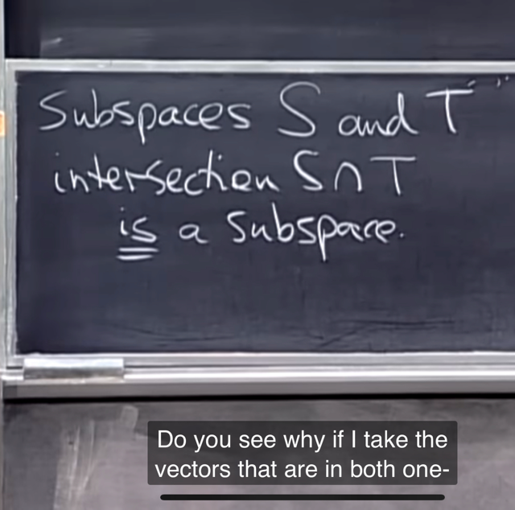
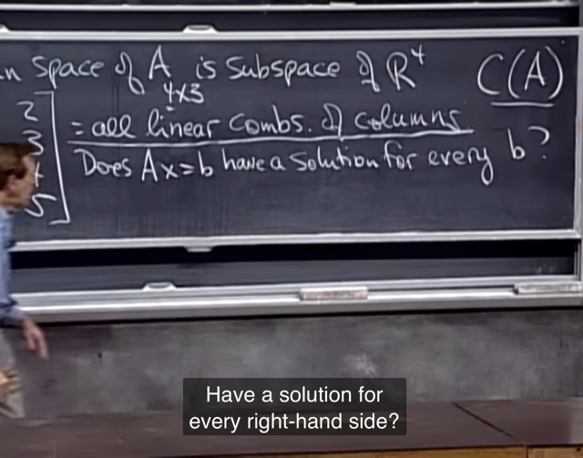
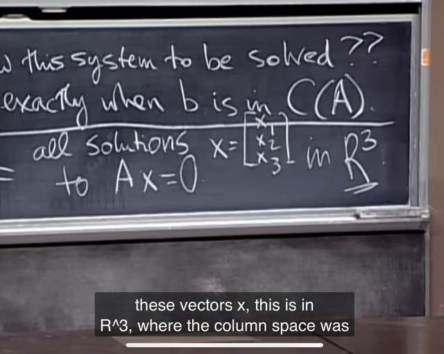
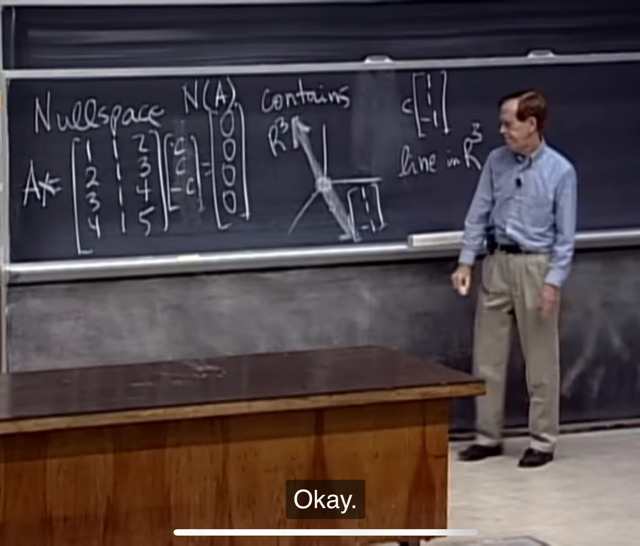

Column space và nullspace
Strang gọi không gian vector và không gian con là trung tâm của đại số tuyến tính. Bài này dựng hai không gian con quan trọng từ một ma trận: column space trả lời "Ax = b có nghiệm khi nào", nullspace là tập mọi nghiệm của Ax = 0.
- Cần biết trước
- Không gian vector và không gian con (bài 5)
- Mở ra
- Giải Ax = 0 · Giải Ax = b · Bốn không gian con
- Bài giảng của tác giả
- Phần 6
1Hợp và giao của hai không gian con
Trong \(\mathbb{R}^3\), lấy một mặt phẳng \(P\) qua 0 và một đường thẳng \(L\) qua 0 (không nằm trong \(P\)). Cả hai đều là không gian con. Còn hợp \(P \cup L\) thì không: lấy một vector trên \(P\), một vector trên \(L\), cộng lại thường ra một vector nằm ngoài cả hai.
Giao \(S \cap T\) của hai không gian con thì luôn là không gian con. Nếu \(u, v\) cùng nằm trong \(S\) và \(T\), thì \(u + v\) nằm trong \(S\) (vì \(S\) là không gian con) và nằm trong \(T\) (cùng lý do), nên nằm trong giao. Phép nhân với số cũng vậy.


2Column space và câu hỏi Ax = b
Ví dụ của Strang có 4 hàng, 3 cột:
Mỗi cột có 4 thành phần nên \(C(A)\) nằm trong \(\mathbb{R}^4\). Ba vector thì cùng lắm phủ được một "mặt phẳng 3 chiều" trong \(\mathbb{R}^4\), không thể phủ hết. Vậy \(Ax = b\) không giải được với mọi \(b\). Giải được với \(b\) nào?
Mẹo của Strang: chọn \(x\) trước rồi xem ra \(b\) gì. \(x = 0\) cho \(b = 0\); \(x = (1, 0, 0)\) cho \(b\) bằng cột 1. Câu trả lời hiện ra: \(Ax = b\) có nghiệm đúng khi \(b\) là một tổ hợp các cột của \(A\), tức


\(C(A)\) rộng cỡ nào? Cột 3 bằng cột 1 cộng cột 2, nên nó không thêm thông tin: bỏ nó đi thì column space vẫn y nguyên. Hai cột đầu chỉ hai hướng khác nhau, nên \(C(A)\) là một mặt phẳng hai chiều trong \(\mathbb{R}^4\).
Tương tác Đầu vào: sửa bốn số của \(b\), hoặc bấm một ví dụ. Kết quả: máy khử Gauss \([A \mid b]\) để biết \(b\) có nằm trong \(C(A)\) không, và nếu có thì viết ra một cách kết hợp các cột. Nullspace của \(A\) hiện ở dưới, viết bằng nghiệm đặc biệt \((-1, -1, 1)\) (cách bài 7 sẽ dạy), cùng một đường thẳng với \((1, 1, -1)\).
3Nullspace
Nullspace \(N(A)\) là tập mọi \(x\) sao cho \(Ax = 0\). Với ví dụ trên, \(x\) có 3 thành phần nên \(N(A)\) nằm trong \(\mathbb{R}^3\) (còn \(C(A)\) nằm trong \(\mathbb{R}^4\)). Vector 0 luôn là một nghiệm. Một nghiệm khác: \((1, 1, -1)\), vì cột 1 + cột 2 − cột 3 = 0. Mọi bội \(c\,(1, 1, -1)\) cũng là nghiệm, và đó là tất cả: \(N(A)\) là một đường thẳng qua 0 trong \(\mathbb{R}^3\).

Vì sao tập nghiệm của \(Ax = 0\) luôn là không gian con? Nếu \(Av = 0\) và \(Aw = 0\) thì \(A(v + w) = Av + Aw = 0\), và \(A(cv) = c\,Av = 0\). Chỉ cần luật phân phối của phép nhân ma trận.
3.1Đổi 0 thành b thì sao?
Gs thay đổi b thành [1 2 3 4] , câu hỏi là với equation system này, TẬP HỢP CÁC SOLUTION CÓ LÀM THÀNH MỘT VECTOR SPACE KHÔNG? (nếu có solution, trong trường hợp này là có) (b đã khác 0 nên ta ko còn đang xét nullspace nữa)
Thử trả lời: KHÔNG. Vì [0 0 0] - gốc O - không phải là solution, điều này có thể ngay lập tức trả lời câu hỏi này là KHÔNG.
Tập nghiệm của \(Ax = (1, 2, 3, 4)\) có \((1, 0, 0)\) và \((0, -1, 1)\); nó là một đường thẳng song song với \(N(A)\) nhưng không đi qua 0. Thử trong hình tương tác ở trên với ví dụ "b = cột 1".
4Hai cách dựng một không gian con
Bài kết thúc bằng ý cần nhớ: có hai cách mô tả một không gian con. Dựng từ vài vector: lấy mọi tổ hợp tuyến tính của chúng, như column space. Cho một phương trình: lấy mọi nghiệm của nó, như nullspace là mọi nghiệm của \(Ax = 0\). Bài sau tìm nullspace một cách có hệ thống bằng phép khử.